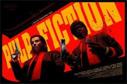
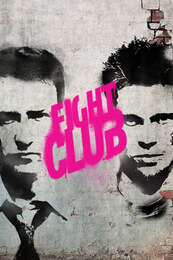
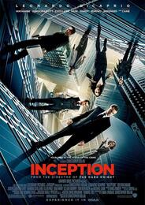

Sezione articoli: qui troverai tutte le informazoni riguardanti i 4 film citati in precedenza.
-
Pulp Fiction
Pulp Fiction è un film del 1994 scritto e diretto da Quentin Tarantino e interpretato, tra gli altri, da John Travolta, Samuel L. Jackson, Uma Thurman e Bruce Willis. Tarantino scrisse Pulp Fiction durante il biennio 1992-93, inglobando scene che il suo amico e collaboratore Roger Avary aveva originariamente scritto per Una vita al massimo. Il film è noto per...
PER SAPERNE DI PIU' -
Fight Club
Fight Club è un film del 1999 diretto da David Fincher, basato sull'omonimo romanzo di Chuck Palahniuk. Sceneggiato da Jim Uhls, prodotto da Art Linson e Arnon Milchan. Il film, che offre una visione altamente critica del consumismo e dell'alienazione dell'uomo moderno, è stato inserito nel 2008 al decimo posto nella classifica Lista dei 500 migliori film della storia secondo Empire. Il protagonista (Edward Norton) è un giovane uomo il cui...
PER SAPERNE DI PIU' -
Inception
Inception è un film del 2010 scritto e diretto da Christopher Nolan. Il film, un thriller fantascientifico che esplora il concetto onirico, ha un cast composto da Leonardo DiCaprio, Tom Hardy, Ken Watanabe, Joseph Gordon-Levitt, Ellen Page, Marion Cotillard e Cillian Murphy. Acclamato dalla critica e dal pubblico, la pellicola ha ottenuto diversi riconoscimenti, tra cui 4 premi Oscar: miglior fotografia, miglior sonoro, miglior montaggio sonoro e migliori effetti speciali; è stato inoltre candidato al miglior film, migliore sceneggiatura originale, migliore scenografia e migliore colonna sonora. Dominic "Dom" Cobb è un "estrattore", un professionista che si occupa...
PER SAPERNE DI PIU' -
Blue

Blow è un film del 2001 diretto da Ted Demme. La storia è basata su un romanzo di Bruce Porter su George Jung, un trafficante di droga legato al cartello di Medellín, attivo negli anni settanta e ottanta. La storia è raccontata dallo stesso George Jung attraverso un flashback, che comincia negli anni '50, quando il protagonista era solo un bambino. Nato e cresciuto ...
PER SAPERNE DI PIU'